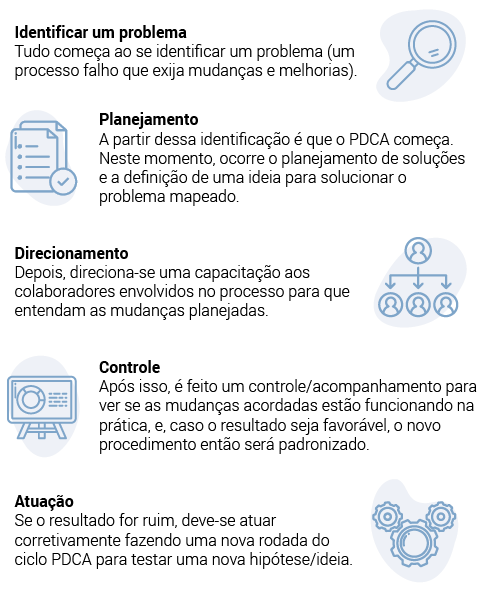
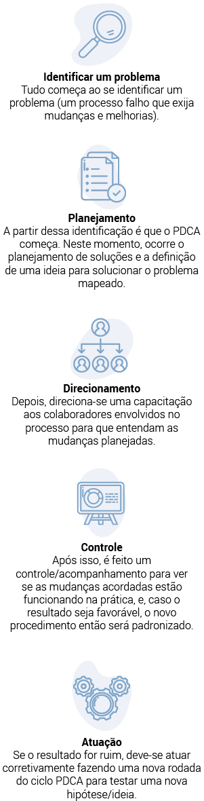
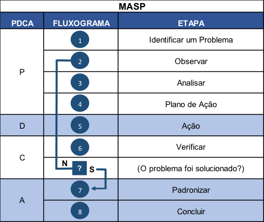

Neste conhecimento, você conhecerá algumas das principais ferramentas de gestão que auxiliam na organização de uma empresa. Você perceberá que elas servem como suporte para estruturar um bom planejamento organizacional, alcançar um bom nível de controle das operações e também auxiliar na tomada de decisão, o que justifica e muito a sua utilização no dia a dia para profissionais da contabilidade ou que atuam em algum nível de gestão de empresas. Veja então algumas dessas ferramentas e saiba como aplicá-las no seu dia a dia.
A primeira delas é o ciclo PDCA, uma ferramenta de gestão utilizada com frequência para avaliar processos. Ele identifica falhas e/ou erros, propõe soluções para corrigi-los e, assim, auxiliando a tomada de decisão, promove melhores resultados operacionais dentro da empresa.
O PDCA envolve quatro etapas bem simples de serem executadas, que s√£o planejar, direcionar, controlar e atuar.
 Figura 1 – Execução das etapas do PDCA
Tudo começa ao se identificar um problema (um processo falho que exija mudanças e melhorias). A partir dessa identificação é que o PDCA começa. Neste momento, ocorre o planejamento de soluções e a definição de uma ideia para solucionar o problema mapeado. Depois, direciona-se uma capacitação aos colaboradores envolvidos no processo para que entendam as mudanças planejadas. Após, é feito um controle/acompanhamento para ver se as mudanças acordadas estão funcionando na prática, e, caso o resultado seja favorável, o novo procedimento então será padronizado ou, se o resultado for ruim, deve-se atuar corretivamente fazendo uma nova rodada do ciclo PDCA para testar uma nova hipótese/ideia.
Na sua prática como técnico em contabilidade, você pode usar o PDCA para testar a viabilidade em tudo que desejar, como, por exemplo, verificar um novo método de captar novos clientes para o escritório de contabilidade. Pode-se criar um canal no YouTube com dicas para empreendedores, por exemplo. Haveria, então, um planejamento sobre os temas dos vídeos, o conteúdo e as formas de divulgar o escritório, e, depois, o treinamento dos youtubers que participariam do canal. Após isso, faz-se o acompanhamento para verificar se a taxa de conversão do público que assiste aos vídeos foi favorável: se sim, então o projeto se manterá; se não, então o projeto será finalizado e outro ciclo PDCA será iniciado para analisar uma nova forma de captar novos clientes.
Veja a seguir a ferramenta 5W2H, que tem uma proposta semelhante à do ciclo PDCA.
A metodologia 5W2H, assim como o ciclo PDCA, tem como alvo solucionar problemas ao propor soluções de melhoria por meio de um plano de ação. A metodologia se estrutura em torno de sete questões norteadoras:
Você inicia descrevendo detalhadamente o problema e a solução proposta ou a meta que será atingida ao corrigir o problema por meio da ação adotada.
Aqui você descreverá o local ou setor no qual o problema se encontra e também se a solução adotada será aplicada somente no próprio setor onde está ocorrendo o problema ou se a solução envolverá também outros setores e elementos externos à empresa (isso exigirá maior mobilização para adotar a mudança proposta).
Você deverá responder qual é o prazo para que a solução proposta apresente resultados. Aqui será apresentado o cronograma do plano de ação.
Aqui você justifica para a empresa a importância em resolver o problema identificado (expor indicadores quantitativos e qualitativos que respaldem o plano de ação).
Deve-se detalhar os integrantes responsáveis por dar andamento ao plano de ação, sejam eles internos e/ou externos, e dividir as tarefas de cada um.
Você detalhará funcionamento cada etapa do plano de ação, as atividades envolvidas e os possíveis empecilhos que podem ser um entrave para sua execução. Tente usar um fluxograma ou um mapa conceitual para ter uma melhor visão do projeto e de suas etapas.
Esse último questionamento está ligado tanto à quantidade quanto ao custo envolvido ao executar o plano de ação. Podem ser detalhados também os gastos ou a quantidade de horas perdidas que o problema proporcionou para o setor ou para toda a empresa e o investimento necessário para solucioná-lo.
Como exemplo, é possível citar o uso de um software contábil antigo pelo escritório de contabilidade, que já não atende mais às necessidades da empresa. Nesse caso, todos os setores estão sendo afetados e a troca seria uma boa solução. Para isso, é possível usar a metodologia 5W2H para nortear a escolha de um novo software contábil:
 Explique o problema, os setores e as pessoas afetadas
Explique o problema, os setores e as pessoas afetadas Defina um prazo para ocorrer a troca do software
Defina um prazo para ocorrer a troca do software Exponha, por meio de indicadores, por que é vital trocar o quanto antes
Exponha, por meio de indicadores, por que é vital trocar o quanto antes  Detalhe os setores e as pessoas envolvidas na escolha do software
Detalhe os setores e as pessoas envolvidas na escolha do softwareA ferramenta a seguir é o Método de Análise de Soluções de Problemas (MASP), que mescla o uso do ciclo PDCA com a metodologia 5W2H.
O Método de Análise e Solução de Problemas (MASP), devido à sua eficiência, é frequentemente aplicado nas rotinas operacionais de diversas empresas. O MASP se estrutura com base em um ciclo PDCA, o qual, retomando, foca em planejar uma ação para corrigir um problema ou melhorar um processo; direcionar treinamento e orientações para aplicar o plano de ação que foi planejado; controlar os resultados (maior ou menor) e atuar corretivamente quando o resultado for menor, ou padronizar o processo da solução encontrada quando o resultado for maior.
Contudo, o MASP conta com oito subetapas que facilitam o melhor entendimento, a construção e a execução do PDCA. Essas etapas são:
Figura 2 – Etapas do MASP
A imagem começa na parte de cima com o título MASP. Logo abaixo, existem três colunas com os subtítulos: PDCA, Fluxograma e Etapa. Na primeira coluna há o P, que representa planejar. Na segunda coluna, o indicativo numérico de um a quatro no fluxograma, que significa que haverá quatro etapas no planejamento. Na terceira coluna, há a descrição das quatro etapas: Identificar um problema, Observar, Analisar, Plano de Ação. Na primeira coluna, agora, o D representa direcionar. Na segunda coluna, consta o indicativo do número cinco no fluxograma, que significa que haverá uma etapa em direcionar (sendo a sequência das quatro etapas anteriores do planejamento). Na terceira coluna, há a descrição da etapa Ação. Na primeira coluna, agora, o C representa controlar. Na segunda coluna, existe o indicativo do número seis e de um ponto de interrogação no fluxograma, que significa que haverá uma etapa em controlar e mais uma pergunta, que deverá ser respondida ao final dela. Na terceira coluna existe a descrição da etapa Verificar, e, após isso, fazer a seguinte pergunta: O problema foi solucionado? Se sim, então segue-se o fluxo para a próxima etapa; se não, então volta-se para a etapa dois do Planejamento, que é observar. Por último, na primeira coluna, o A representa atuar. Na segunda coluna, tem-se os números sete e oito no fluxograma, que significa que haverá duas etapas em atuar. Na terceira coluna há a descrição das etapas Padronizar e Concluir.
Agora, observe como o MASP pode ser aplicado na pr√°tica em conjunto com a ferramenta 5W2H:
Observa-se, por exemplo, a desorganização e o atraso no envio de documentos realizado pelos clientes para o escritório de contabilidade. É importante ter em mente um ponto de atenção: o histórico do problema nos últimos meses demonstrando como isso afeta a operação do escritório por meio de perdas e de ganhos. Nesse ponto, o gestor já pode nomear um responsável ou um grupo de trabalho que dará andamento ao projeto a fim de solucionar o problema.
Nessa etapa, é preciso investigar amplamente o problema sob vários aspectos (por exemplo: a desorganização no envio como uma falha nos processos do escritório ou como falha dos próprios clientes). Você observa o processo executado no setor, coletando dados para serem analisados na próxima etapa. Aqui são definidos o cronograma de execução e também o orçamento do projeto.
Com base nos dados levantados na etapa de observação, será possível identificar as prováveis causas e analisá-las com maior profundidade, executando alguns testes ou simulações para encontrar o ponto-chave do problema no envio dos documentos.
Chegando nessa etapa, o grupo ou a pessoa responsável deverá criar um plano de ação com o intuito de acabar ou minimizar o problema. Uma boa ferramenta para ser utilizada agora é o 5W2H, no qual você definirá as ações a implementar por meio de uma tabela.
| Plano de ação – 5W2H | 5W | 2H | |||||||||||
|---|---|---|---|---|---|---|---|---|---|---|---|---|---|
| What (o que ser√° feito?) | Why (por que ser√° feito?) | Where (onde ser√° feito?) | When (quando ser√° feito?) | Who (por quem ser√° feito) | How (como ser√° feito?) | How much (quanto custar√°?) | |||||||
| Ação 1 – Capacitação on-line com os clientes | Para evitar o atraso nos processos do escritório, que dependem do envio dos documentos | Via plataforma on-line: Skype ou Google Meet | Todo início de mês | Pelo nosso gestor da contabilidade | Tipo palestra/capacitação externa. Método a distância (on-line) e realizado em grupo com todos os clientes | Custo zero. Apenas o tempo empregado para construir a apresentação com as principais orientações | |||||||
| Ação 2 – Capacitação on-line dos técnicos em contabilidade | Para evitar o atraso nos processos do escritório, que dependem do envio dos documentos | Via plataforma on-line: Skype ou Google Meet ou presencial | A cada 15 dias | Pelo nosso gestor da contabilidade | Tipo: palestra/capacitação interna. Método a distância (on-line) ou presencial realizado com todos os técnicos em contabilidade | Custo zero. Apenas o tempo empregado para construir a apresentação com as principais orientações | |||||||
| Ação 3 | |||||||||||||
| E quantas mais forem necess√°rias | |||||||||||||
Tabela 1 – Plano de ação 5W2H
No exemplo anterior foi bem explicada a proposta do plano de ação e agora, nesta etapa, ela será colocada em prática. Como visto, a ação pode ser um treinamento, a compra de um software, a criação de uma nova função que não existia e será dedicada somente para resolver o problema, a contratação de novos colaboradores em caso de uma situação muito grande e urgente etc.
Aqui será verificado se a estratégia adotada foi efetiva ou não. Você comparará os resultados, destacando os efeitos colaterais da ação adotada e o grau de eficácia do plano de ação. Caso a solução não tenha sido eficaz, volte à etapa 2 do MASP (Observar) e percorra todo o caminho até a etapa 6 novamente até que a solução tenha sucesso.
Nessa etapa, a solução encontrada é padronizada por meio de um procedimento operacional padrão (POP) e comunicada a todas as pessoas envolvidas no processo, sejam elas internas ou externas, por meio de manuais e treinamentos.
Nessa última etapa, o grupo de trabalho ou a pessoa responsável por implementar o MASP deverá se comprometer em acompanhar o que foi acordado como solução para se certificar de que está sendo seguido por todos. Também, se existirem problemas menores que não foram solucionados, ou novos, que surgiram ao longo do tempo, deverá ser acordada uma revisão periódica para buscar melhorias.
Foram detalhadas três importantes ferramentas até agora: o PDCA, o 5W2H e o MASP. Em seguida, veja um programa muito útil para ser implementado na empresa, inclusive como uma proposta de ação no próprio 5W2H detalhado antes.
O programa 5s pertence ao método just in time criado pela empresa Toyota e muito utilizado para chegar perto do almejado estoque zero. Entretanto, esse programa também pode ser utilizado para melhorar os processos internos em diversas frentes (como, em exemplo já citado, a desorganização no envio de documentos pelos clientes). Para implementar o programa, você precisará capacitar os colaboradores quanto à filosofia 5s e seus benefícios para a cultura organizacional da empresa. Veja as diretrizes que orientam cada um dos 5s:
Classificar objetos, materiais e equipamentos, organizando-os conforme a frequência de uso e eliminando o que não for necessário. Todos têm que fazer sua parte e participar!
Organizar tudo o que foi classificado no primeiro senso, melhorando o desenho do ambiente de trabalho (sua ilha/mesa de trabalho). Quando todos fazem sua parte, é mais fácil achar coisas, pois tudo fica organizado e identificado por rótulos ou etiquetas. Novamente, todos precisam estar engajados para que a organização dos setores seja eficaz.
Limpar o setor (sua área de trabalho) em horários predefinidos por você (foco na saúde e higiene). Também evitar sujar para não ter que limpar depois (retrabalho).
Focar na construção de hábitos e rotinas que mantenham uma base sólida para os outros três sensos já explicados, tendo como objetivos a boa organização dos setores e a qualidade de vida no trabalho.
É a prática natural, pelos colaboradores, dos sensos já detalhados. Treinamentos periódicos são necessários para manter a cultura dos 5s funcionando, assim como preservar o foco em criar uma cultura na qual todos saibam a importância de fazer sua parte para buscar melhorias contínuas nos processos.
Você percebeu o quanto é simples o entendimento de cada um dos sensos que compõem o programa 5s?
Contudo, na prática, esse programa não é fácil de ser implementado e continuado, consumindo muito tempo até o atingimento da maturidade entre os colaboradores. Quando essa maturidade é atingida, porém, ela tende a trazer bons resultados para a gestão.
A seguir, observe uma ótima estratégia para melhorar a eficiência do seu negócio: o benchmarking.
O benchmarking pode ser resumido na seguinte frase:
Dê uma espiada no que seu vizinho está fazendo de bom!
Caso você não tenha entendido, eis o que significa.
O benchmarking é uma estratégia que busca no mercado um ponto de referência em qualidade ou boas práticas para serem copiadas. Nessa estratégia, é possível comparar produtos, serviços e práticas de negócio utilizadas pelos rivais a fim de conseguir vantagem competitiva no mercado que você faz parte.
É possível fazer alguns tipos de benchmarking, como você verá a seguir:
Como o próprio nome já diz, trata-se de uma observação de boas práticas ou metodologias inovadoras adotadas por algum setor dentro da própria empresa, e que podem ser replicadas para os demais setores. Pode ser até mesmo alguma prática criada por uma filial e que deu tão certo que agora será incorporada por todas as demais filiais da empresa.
Aqui o foco será a concorrência, preferencialmente do líder do segmento, já que ele conta com a maior fatia de mercado não por acaso, e sim por causa de um bom produto/serviço ou uma prática inovadora. A intenção inicial é alcançar a concorrência, buscando estar lado a lado dela na disputa da maior fatia de mercado e superá-la a longo prazo.
A intenção é fazer um comparativo entre os processos de trabalho em um grupo específico de empresas, não sendo necessário que as empresas sejam do mesmo ramo ou segmento. Esse processo geralmente é acompanhado por um workshop de difusão e compartilhamento de boas práticas entre várias empresas participantes de um determinado evento empresarial, o qual tem como foco exatamente fazer a exposição de processos inovadores. Depois, alguns desses processos vistos e registrados pelo público podem ser adaptados e replicados dentro de diversas empresas.
Nesse tipo de benchmarking, a cooperação na troca de dados e informações é bem maior do que no benchmarking funcional. Aqui, há uma parceria no compartilhamento de informações e práticas operacionais, como, por exemplo, quando um escritório de contabilidade observa os processos de trabalho de uma instituição de ensino no âmbito da organização de documentos enviados pelos alunos. Nesse contexto, os alunos são como clientes para a instituição de ensino e a forma como a escola lida com esse processo pode revelar práticas ou ideias a serem adotadas no escritório de contabilidade no tocante ao gerenciamento da documentação enviada pelos clientes. O caminho oposto também é realizado, isto é, alguma prática do escritório de contabilidade que, ao ser compartilhada, pode ajudar na melhor organização dos processos da instituição de ensino.
Hoje se fala muito em pensamento disruptivo e inovação. Devido a isso, fazer um benchmarking se torna uma excelente forma para se manter atualizado às novas tendências, antecipando-as e se tornando uma referência para o segmento ou até mesmo para outras empresas em geral, como um bom case de benchmarking.
Em resumo, observe as ações de mercado das concorrentes que são referência e copie as melhores práticas para assim manter o seu negócio competitivo.
No próximo tópico, você verá uma ferramenta excelente para ser utilizada nas análises interna e externa de um negócio: a matriz SWOT.
A matriz de SWOT (strengths: forças; weaknesses: fraquezas; opportunities: oportunidades; threats: ameaças) é uma ferramenta muito útil para analisar fatores internos e externos que interferem direta ou indiretamente no planejamento organizacional da empresa. Ela pode ser aplicada para subsidiar o planejamento em níveis operacional, tático ou estratégico do seu negócio (do escritório de contabilidade, por exemplo); para ser utilizada como ferramenta para orientar os clientes que desejam abrir seu negócio e que precisam de consultoria em business intelligence (inteligência de negócios), ou seja, serve para que os clientes não cometam erros na abertura da empresa; e pode ser aplicada também para aqueles negócios já estruturados, mas que estejam passando por dificuldades para se posicionarem no mercado-alvo.
A matriz de SWOT, também conhecida como análise de SWOT, pode ser criada e estruturada de modo simples. Na parte superior constam as forças e as fraquezas do negócio como pontos de atenção interna. Por serem questões internas, são mais fáceis de serem trabalhadas, já que dependem unicamente das decisões dos gestores de cada área reduzir as fraquezas e potencializar as forças.
Enquanto isso, os fatores externos ao negócio fogem do controle da empresa com maior facilidade e por isso são difíceis de lidar. Portanto, esses fatores devem ser monitorados de perto a fim de evitar problemas que afetem a saúde financeira do negócio. O foco sempre será aproveitar as oportunidades e minimizar as ameaças.
Agora, veja um exemplo com as principais forças, fraquezas, oportunidades e ameaças que precisam ser monitoradas por um negócio:
Baixar PDFEm um exemplo prático, você, como técnico em contabilidade, pode ser convidado a participar da elaboração do planejamento organizacional do setor de contabilidade, e, assim, mapear as forças do setor e listar as fraquezas.
Feito isso, basta propor um plano de ação 5W2H com soluções a serem adotadas para minimizar as fraquezas encontradas como, por exemplo, a alta rotatividade dos funcionários no setor, o que prejudica a padronização de processos. A propósito, para a abordagem quanto às forças, o ideal é criar um POP que auxiliará a manter os processos que já são boas práticas, isto é, as forças da organização.
No momento de listar as oportunidades e ameaças, também é aconselhável usar um plano de ação 5W2H. Por exemplo, a economia em crise pode levar a empresa a repensar suas estratégias de vendas ou de prestação de serviços (diminuindo o pacote de serviços que agregam pouco à receita da empresa) ou até mesmo a reduzir gastos enquanto a situação econômica não melhora. Para isso, novamente pode ser utilizado o plano de ação 5W2H a fim de estruturar essas medidas.
Já no quesito oportunidades, para aumentar as vendas em meio a uma crise, podem ser buscadas medidas que façam o negócio alavancar, isto é, estratégias que se caracterizam com oportunidades de alavancagem financeira. Um exemplo seria propor uma parceria de negócio com uma empresa de RH, mas o escritório de contabilidade quarteirizaria o serviço. Assim, um cliente terceiriza o serviço para o escritório, que diz ter toda a infraestrutura de RH para fazer a folha de pagamento dos funcionários, contudo, ele quarteiriza o serviço para um parceiro de negócio especializado em serviços de RH.
Essa é uma estratégia que pode ser adotada independentemente de o momento ser ou não de crise econômica. Isso minimiza os custos com toda a infraestrutura necessária para se criar e manter o serviço de RH no escritório de contabilidade ao mesmo tempo em que amplia o portifólio de serviços oferecidos. Além disso, é sempre bom lembrar que toda oportunidade tem seus riscos inerentes a qualquer negócio. Como qualquer estratégia, essa pode ou não ter êxito e isso é aceitável. Contudo, a análise de SWOT serve exatamente para ajudar o empreendedor ou gestor na verificação das melhores oportunidades, isto é, as que têm baixo risco e que podem trazer bons retornos para o empreendimento.
No último tópico deste conhecimento, estude a matriz BCG, outra matriz que auxilia muito na compreensão do potencial da sua cartilha de produtos e/ou serviços e que, de certa forma, harmoniza-se bem com o que já foi visto na análise de SWOT.
Essa ferramenta utiliza um gráfico que faz a análise de um produto/serviço em comparativo com o mercado e com sua concorrência. Ela se chama BCG porque foi criada pela consultoria Boston Consulting Group. Veja a seguir cada um dos quadrantes da matriz BCG e como eles funcionam:
Figura 2 – Matriz BCG
Fonte: elaborado pelo autor.
A imagem detalha quatro quadrantes da matriz BCG. O primeiro quadrante, da esquerda superior, é demonstrado pela imagem de uma Estrela, que representa os produtos/serviços com altos investimentos e muito atrativos para o mercado. O quadrante da esquerda inferior é demonstrado pela imagem de uma vaca leiteira, que representa os produtos/serviços com grande margem de lucratividade, baixo custo com investimento e facilidade de gerar caixa para o negócio. No quadrante direito inferior consta a imagem de um abacaxi, que representa os produtos/serviços com baixa participação de mercado e gerando lucros baixos. No quadrante direito superior há um ponto de interrogação, que representa os produtos/serviços que ainda não geram grande receita e precisam de grandes investimentos de marketing e projeção de crescimento. Também é possível observar que a matriz forma um gráfico na qual, no lado esquerdo, demonstra o percentual da taxa de crescimento do mercado, e, abaixo do gráfico, a participação relativa do mercado concernente ao produto analisado.
Um bom exemplo de como isso funciona na prática seria a classificação dos produtos e serviços oferecidos por um escritório de contabilidade. Supõe-se que a oferta do serviço de declaração do imposto de renda seja um serviço pouco procurado pelos clientes (pouca participação de mercado) e com baixo retorno para o escritório também quanto ao valor cobrado por cada declaração (baixa taxa de crescimento).
Nesse caso, sua classificação na matriz BCG seria um abacaxi, isto é, um serviço que traz pouco retorno financeiro, mas que, rotineiramente, precisa ser ofertado para compor a cartilha básica de serviços oferecidos aos clientes.
Agora, suponha que o serviço oferecido seja algo novo e com uma boa projeção de crescimento, como uma consultoria tributária. Contudo, por ser algo novo, exige um alto investimento em marketing para começar a gerar uma boa receita.
Nesse caso, a classificação na matriz BCG seria um ponto de interrogação (alta probabilidade de taxa de crescimento e baixa participação de mercado, pois ainda é um serviço novo).
Já no quadrante da matriz classificado com a ilustração da vaca leiteira, o serviço de abertura e fechamento de empresa seria um bom exemplo, visto que o escritório pode cobrar um pouco mais pelo serviço (dependendo de cada caso). Isso porque há uma procura ou demanda pelo serviço considerável também, criando uma boa participação de mercado e uma taxa de crescimento de receita modesta, embora com boas perspectivas de crescimento.
Por último, existe o serviço de consultoria contábil, que pode ser o principal serviço do escritório e classificado na matriz como estrela, exigindo um investimento considerável, ao mesmo tempo que traz um retorno muito maior do que os demais serviços oferecidos, ou seja, contém uma ótima taxa de crescimento e participação de mercado alta pelo serviço oferecido também.
Você chegou ao final deste material, que teve como proposta fazê-lo refletir um pouco sobre as principais ferramentas que podem ser utilizadas para a boa gestão de uma organização. Agora, depende somente de você se apropriar das dicas que foram aqui mencionadas e, quando chegar a hora, executar um bom trabalho como técnico em contabilidade.